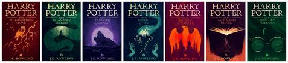

Harry Potter
By JK Rowling
Books Versus Movies. This section ill be comparing the books and the movies.


Versus
Books |
Movies |
|---|---|
Harry Potter And the Sorcerers Stone |
|
| Aunt Petunia and Dudley are blonde | Aunt Petunia and Dudley are brunette |
| Harry met Draco Malfoy and rejected his friendship in Diagon Alley | Harry met Draco Malfoy and rejected his friendship at Hogwarts before the Sorting Hat |
| Voldemort kills Quirrell by leaving his head | Harry kills Quirrell by touching his face |
Harry Potter And the Chamber of Secrets |
|
| Mr. Weasley fixes Harry's glasses in Diagon Alley | Hermione fixes Harry's glasses in Diagon Alley |
| In The books Filch is classified as a squib | The movie never clarifies that Mr. Filch is a squib and has no magic |
| The heir of Slytherin message is written in paint | The heir of Slytherin message is written in blood |
Harry Potter And the Prisoner of Azkaban |
|
| Harry pretends to be Neville Longbottom while on the Knight Bus | Harry is himself while on the Knight Bus |
| Sir Cadogan's portrait replaces the Fat Lady's after she's attacked by Sirius Black. | The Fat lady isnt replaced |
| In the books the backstory of the maurader is explained in great detail | The film doesn't explain the origin story of The Marauders |
Harry Potter And the Goblet of Fire |
|
| Voldemort has red eyes in the books | In the movie his eyes are white |
| After Harry won the Tournament, he gave his winnings to Fred and George to start Weasleys Wizard Wheezes | In the movie it isnt stated |
| Hermione sets up SPEW (The Society for the Promotion of Elfish Welfare) and her plans are mentioned | Hermione's SPEW (The Society for the Promotion of Elfish Welfare) wasn't mentioned in the film. |
Harry Potter And the order of the Phoenix |
|
| Harry goes on a date with Cho Chang in the novel | This isnt mentioned in the movie |
| Ron and Hermione are prefects | This isnt mentioned in the movie |
| Marietta Edgecombe spills the beans about Dumbledore's Army | While Cho Chang spills the beans about Dumbledore's Army |
Harry Potter And the Half-Blood Prince |
|
| After Draco leaves Harry unconscious on Hogwarts Express, Tonks finds him in the novel | After Draco leaves Harry unconscious on Hogwarts Express, Luna finds him in the novel |
| The Burrow is not attacked by Death Eaters during the Christmas | The Burrow is attacked by Death Eaters during the Christmas |
| Harry hid the Half-Blood Prince's book in the Room of Requirement | Ginny hid the Half-Blood Prince's book in the Room of Requirement |
Harry Potter And the Deathly Hallows |
|
| The pregnancy and the child being Harrys godchild is announced in the book | Remus' reveal of Tonks' pregnancy, the birth of their son Teddy, and the fact that Harry is the godfather isn't mentioned in the film |
| In the book we get great detail on the backstory of Reguluis Black | The backstory of Regulus Black, a former Death Eater and Sirius' brother, is not expanded upon in the films. |
| Percy is very much present at the Battle of Hogwarts | He is not seen to take part in the movies |
DISCLAIMER: All of these have been taken from the Oprah Magazine Website
Taken From The MovieFlame Youtube Channel